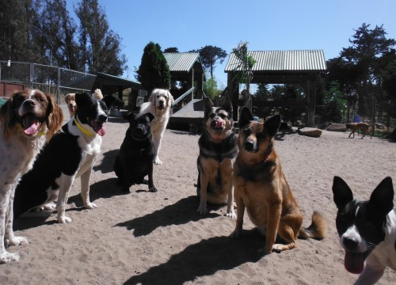
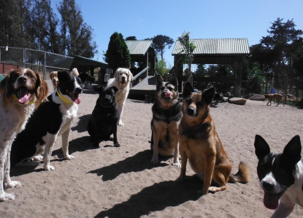
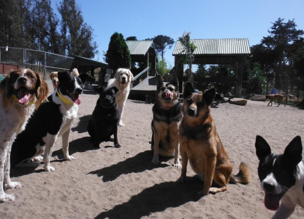

Welcome to the friendliest dog shelter in the desert, where we all win!

Friendly Dog Ranch is a non profit 501c3 no kill dog shelter dedicated to rescuing and rehoming needy dogs of all ages, breeds and backgrounds. Our organization was built on the belief that all dogs deserve a second chance at a new life. It's not about being the perfect dog, it is about dog and adopter being perfect for one another.
We are here for the dogs who have no other options. This includes dogs that other shelters do not have space for, long term residents who have run out of time or dogs that are struggling in the conventional shelter environment. Our mission, simply, is to help reduce the number of dogs being euthanized. Our focus is taking in needy dogs from Animal Control Agencies and Humane Societies located within the state of Arizona, however, we do work with many shelters and smaller Rescue Groups across the country, as well as a limited number of owner surrendered pets.

 
